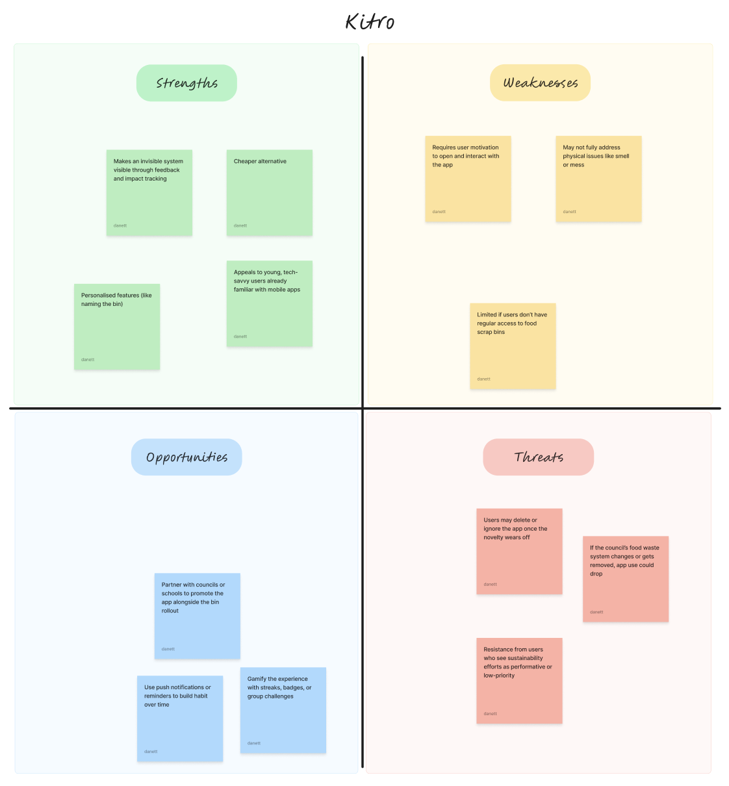
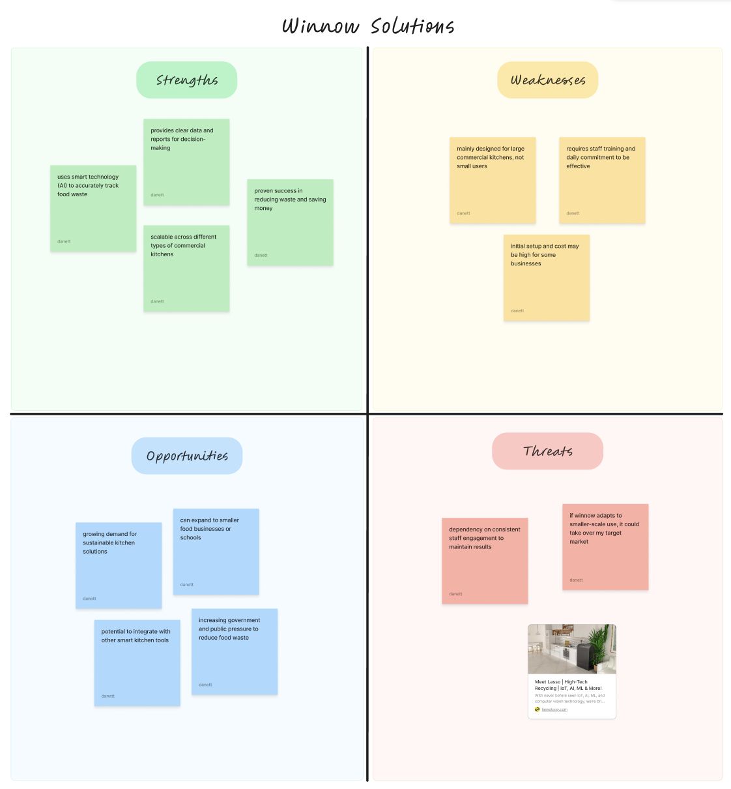
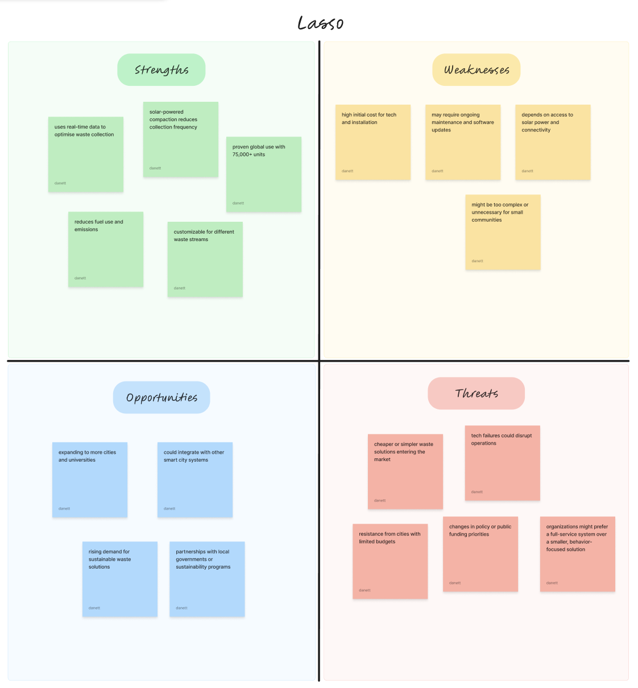

.png)

Challenge
I was tasked with creating and pitching a human-centred social or commercial enterprise in Auckland that uses design to solve a real-world problem and enhance social, cultural, or community well-being.
Problem
Solution
DISCOVER
My curiosity towards climate action and how everyday behaviours influence environmental impact led me into further academic research, where I found key statistics in Auckland where,

DEFINE
I wondered: what was there a lack of understanding of? And why does it make it feel unnecessary?
#particpant 1
"I don't even know where the food scraps are going"
#participant 3
"It takes up too much time and maintenence is hard"
And the new question turned into:
How might we...
Challenge
Solution
CLARIFY
After, proposing the solution, and did extensive research on competitors with similar products.

An example of how the competitor, Kitro, uses the idea
To further understand where I can position this in the market, I did further case studies and SWOT analysis on competitors (
kitro
  

I saw an opportunity to simplify the concept for the target audience and applied key features to my solution.
The purpose and features for the service became clear; I was able to define key features and goals for the service that would set it apart in the market.
Large-scale ❌
Designed for restaurants and commercial waste systems
Too complex ❌
Heavy systems built for tracking data
Low visibility ❌
Little feedback for individuals on their personal impact
Scaled for everyday use ✅
Translated system thinking into a simple, personal bin + app experience
Simplify process ✅
Reduced complexity into clear, low-effort actions at the point of disposal
Personal context ✅
Designed around individual daily routines
CONCEPTUALISE


Sitemap and user story map for the app

Wireframes of app
OUTCOME
Onboarding process with their own personal bin to make it their own.


Check their impact and progress over time to see the benefits of their actions and encourage continued use.
Get tips on how to reduce food waste and make the most of your scraps.


REFLECTION
this project made me realise I’m more interested in understanding people than designing interfaces. I became more drawn to the thinking behind user behaviour. What people do, why they do it, and how those patterns can inform better design decisions. Instead of focusing purely on the final output, I found myself valuing the process of research, observation, and uncovering insight.